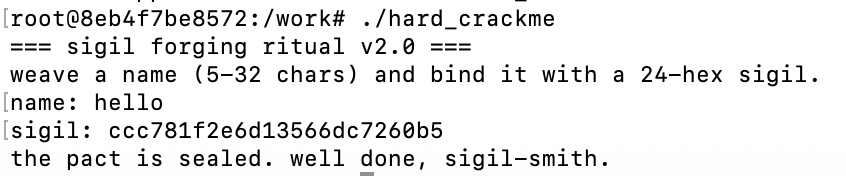

hard_crackme is a dynamically linked 64-bit ELF. The entry point hands FUN_001010c0 to __libc_start_main, which makes that function main, and everything interesting lives inside it. Nothing is packed and nothing is stripped of its imports, so the import table alone sketches the shape of the program: fgets and strcspn for reading input, strlen for measuring it, snprintf for producing something, and ptrace for noticing me.
The program states its own specification on startup, which saved a first pass over the strings:
Two inputs, one of them a fixed 24 hex characters. Twenty-four hex characters are twelve bytes, and twelve bytes is the size of three 32-bit values printed as hex. That guess turned out to be the whole structure of the check, but it was only a guess until snprintf confirmed it much later.
=== sigil forging ritual v2.0 ===
weave a name (5-32 chars) and bind it with a 24-hex sigil.
name:The length check does not look like a length check:
len comes from strlen and is unsigned. For anything shorter than five characters the subtraction wraps around to a value near 2^64, which fails the comparison just as surely as a value that is too large. One unsigned comparison covers both bounds, so len >= 5 && len <= 32 becomes (unsigned)(len - 5) <= 27. The advertised 5 to 32 range is exactly what it implements.
The character filter is the same trick at byte width:
Subtract the first printable ASCII code, and everything valid lands in 0 to 0x5e. Control characters underflow, bytes above 0x7f overflow, and both end up above the bound. The loop runs on pointers rather than an index and terminates on p != buf + len, which is the usual strength reduction rather than anything meaningful.
Before either check, the newline that fgets leaves behind is removed with the standard idiom buf[strcspn(buf, "\n")] = 0. Worth noting only because the hash that follows runs over exactly strlen bytes, so an extra newline would change every result.
if (len - 5 < 0x1c)
if (0x5e < (byte)(*p - 0x20)) fail;The sigil length is checked first, and only inside that branch does the program touch the name again. A 16-byte output buffer is zeroed with a single SSE store, which Ghidra renders as the unreadable SUB169((undefined1 [16])0x0, 0), and three state variables are seeded with constants that identify themselves on sight:
0x811c9dc5, the 32-bit FNV offset basis0xcbf29ce4, the top half of the 64-bit FNV offset basis0x9e3779b9, the 32-bit golden ratio constantOnly the first is used as FNV actually intends. The other two are seeds borrowed for accumulators that have nothing to do with FNV, which is a reasonable way to make a hash look familiar without being reproducible from a library.
All three advance in a single pass over the name:
The first state is textbook FNV-1a. The second multiplies each character by its position before adding it, then rotates left by seven. Position weighting is what stops the accumulator from treating anagrams as equal, since a plain sum cannot tell ab from ba. The third shifts each character left by a counter that advances by three per iteration and wraps at 15, XORs it into the state and rotates left by thirteen, which spreads the same character across different bit positions depending on where it sits in the string.
Two details decide whether a reimplementation matches. The position counter starts at one, not zero, so the first character does contribute to the second state. And the loop bound is len + 1 against a counter that starts at one, which is the same number of iterations as a zero-based loop to len, just written from a different starting point.
Cross-checking one state against a reference implementation was enough to validate the whole loop. FNV-1a of hello is 0x4f9f2cab, a published value, and my code produced it. Three states advance in lockstep over the same bytes, so if the byte order, the length and the masking were wrong, FNV would have been wrong too.
MOVZX EAX, byte ptr [RBP]
ADD RBP, 1
MOV ECX, EAX
XOR EDX, EAX ; fnv ^= ch
IMUL ECX, ESI ; ch * position
ADD RSI, 1
IMUL EDX, EDX, 0x1000193 ; fnv *= FNV prime
ADD ECX, R8D ; += accumulator
ROL ECX, 7
MOV R8D, ECX
MOV ECX, EDI
ADD EDI, 3
AND ECX, 0xf
SHL EAX, CL ; ch << (shift & 15)
XOR EAX, R9D
ROL EAX, 0xd
MOV R9D, EAX
CMP R10, RSI
JNZ loopAfter the loop each state passes through the same five-step mixer:
The same five steps are applied to each of the three states, so the mixer is a stock building block rather than anything specific to this crackme. Ghidra prints the second multiplier as -0x7b935975 because it types the register as signed, but the encoded bytes are 8b a6 6c 84, little-endian 0x846ca68b. Carrying the negative form into Python is the obvious way to poison a reimplementation, since a negative value survives a right shift as an arithmetic shift and propagates sign bits that do not exist in the original.
The mixer alternates two operations for a reason. Multiplication scrambles the high bits well and the low bits badly, so the shift-and-XOR pulls the well-mixed high bits down where the next multiplication can spread them again. The result is that a single changed input bit flips roughly half the output bits, which is exactly what the hash needs and exactly what neither operation achieves alone.
The three states are not finalised independently. Each one is folded into the next before being mixed, and the first is folded back into the last at the end:
Before the finaliser the three hashes are independent and could in principle be attacked one at a time. Afterwards every output depends on all three inputs, and the only way forward is to compute the whole thing. The two joke constants are presumably there so the algorithm cannot be matched against a stock implementation of anything.
x ^= x >> 16;
x *= 0x7feb352d;
x ^= x >> 15;
x *= 0x846ca68b;
x ^= x >> 16;
fnv = mix(fnv ^ 0xdeadbeef);
simple = mix(simple ^ fnv);
salt = mix(salt ^ simple ^ 0xcafebabe);
group1 = fnv ^ salt;
group2 = simple ^ group1;
group3 = salt;The digest is turned into text by a single call:
Three conversions, two arguments. snprintf is variadic and has no way to know how many values it was actually given, so it reads a third one from wherever the calling convention says the next argument lives. On System V x86-64 the integer arguments are rdi, rsi, rdx, rcx, r8, r9, and the third conversion therefore consumes r9d.
The decompiler cannot express this, because in C the call simply has two arguments. The listing shows what r9d holds at the moment of the call, and it is not garbage: it is the finalised third state, left in place by the finaliser and never overwritten.
Whether this is a deliberate trick or an author who deleted an argument and did not notice, the effect is the same. Reading the decompiler alone produces a solver that is right about sixteen characters out of twenty-four.
snprintf(buf, 0x19, "%08x%08x%08x", uVar30, uVar29 ^ uVar30);
XOR R9D, EAX ; salt ^= salt >> 16
XOR EAX, EAX ; al = 0, required for a variadic call
XOR ECX, R9D
XOR R8D, ECX
CALL snprintfThe last fifty lines of the decompiled function are the worst-looking code in the binary. They are a wall of auVar3 [15], auVar12 [13], unkuint9 and CONCAT81, none of which are real C types. They are Ghidra trying to describe byte lanes of an XMM register, which its type system has no way to name, and the output is not worth reading. The corresponding listing is about twenty instructions and takes a few minutes.
It starts by comparing the first sixteen bytes in one operation:
Writing d for a digest byte and p for the corresponding entered byte, each lane of XMM2 now holds d ^ p, which is zero exactly where the two characters agree. The question for the rest of the block is whether all sixteen of those results are zero.
PUNPCK interleaves two registers, and since the second one is zero the effect is to widen each byte with zeros above it. Two rounds turn sixteen bytes into sixteen 32-bit values spread across four registers. This is the vector form of the MOVZX that appears in the scalar tail below, and it is there because the accumulator in the original source is an int while the values being folded into it are bytes.
PSRLDQ shifts the entire 128-bit register by a number of bytes rather than shifting each lane, so a shift of eight moves lane 3 into lane 1 and lane 2 into lane 0. Two shift-and-OR steps are enough to fold four lanes into one, and MOVD keeps only that one. The three upper lanes end up holding partial results that nobody reads.
Twenty-four bytes are not a multiple of sixteen, so the remaining eight are handled by an ordinary loop that continues into the same accumulator:
ECX does not start at zero here. It arrives holding the folded result of the first sixteen bytes, and the loop ORs the last eight into it.
The whole construction rests on one property: an OR is zero only when every operand is zero. One non-zero bit anywhere survives every subsequent OR and reaches ECX, so TEST ECX, ECX answers "did all twenty-four bytes match" in a single instruction. OR is also associative, which is why folding the lanes pairwise gives the same answer as ORing the bytes one after another. Sixteen comparisons collapse into two shifts and two ORs.
The side effect is that the program cannot tell how far the entered sigil was correct, only whether it was correct. A character-by-character loop with an early exit would leak the position of the first wrong character through timing. This one has nothing to leak, and it gets that property for free from the compiler rather than from any decision by the author.
MOVDQA XMM2, [RSP] ; 16 bytes of the computed digest
PXOR XMM2, [RSP + 0x60] ; XOR with 16 bytes of the entered sigil
PXOR XMM0, XMM0 ; zeroing idiom
PXOR XMM3, XMM3
PUNPCKLBW XMM1, XMM0 ; low 8 bytes -> 8 words
PUNPCKHBW XMM2, XMM0 ; high 8 bytes -> 8 words
PUNPCKLWD / PUNPCKHWD ; words -> doublewords
POR XMM0, XMM4
POR XMM2, XMM1
POR XMM0, XMM2 ; four registers -> one, four lanes left
MOVDQA XMM1, XMM0
PSRLDQ XMM1, 8 ; shift the whole register right by two lanes
POR XMM0, XMM1
MOVDQA XMM1, XMM0
PSRLDQ XMM1, 4 ; and by one more
POR XMM0, XMM1
MOVD ECX, XMM0 ; take the lowest lane
MOVZX EAX, byte ptr [RSI] ; digest byte 16..23
XOR AL, byte ptr [RDX + 0x10] ; entered byte 16..23
ADD RDX, 1
ADD RSI, 1
MOVZX EAX, AL
OR ECX, EAX ; same ECX the vector part produced
CMP RDI, RDX
JNZ loop
TEST ECX, ECX
JZ successEarly in main:
A process can have exactly one tracer. Under a debugger that slot is already taken, the call fails with -1, and the program knows. This is the Linux counterpart of the PT_DENY_ATTACH check I ran into on iOS in CrackMe 03, and it sits in the same relationship to the work: it raises the cost of running the binary and leaves the cost of reading it untouched. Patching is disallowed by the challenge rules, which removes the cheapest bypass, but I never needed one.
The debugger would have been convenient rather than necessary. I wanted it to read three register values at a breakpoint and to confirm what r9d held before snprintf. Both questions are answerable from the listing, and the program itself is a perfect oracle: feed it a name and a computed sigil, and it says whether the reimplementation is correct.
As a side note, the environment fought harder than the binary did. The target is x86-64 ELF and my machine is an Apple Silicon Mac, so gdb could not run it at all. Under Docker with Rosetta the program runs but ptrace does not work well enough for a debugger to read registers, which produces Couldn't get CS register and has nothing to do with the anti-debugging above. A real x86-64 VM is the fix, and not needing one was the faster route.
if (ptrace(PTRACE_TRACEME, 0, 1, 0) == -1)
puts("the spirits sense a watcher...");There is no search anywhere. The sigil is a function of the name, so every valid name has exactly one, and the program is a keygen for itself once the algorithm is transcribed.
M = 0xffffffff
def rotl(x, n):
return ((x << n) | (x >> (32 - n))) & M
def mix(x):
x = ((x ^ (x >> 16)) * 0x7feb352d) & M
x = ((x ^ (x >> 15)) * 0x846ca68b) & M
return x ^ (x >> 16)
def sigil(name):
fnv, acc, salt = 0x811c9dc5, 0xcbf29ce4, 0x9e3779b9
shift = 0
for position, ch in enumerate(name.encode(), start=1):
fnv = ((fnv ^ ch) * 0x01000193) & M
acc = rotl((acc + ch * position) & M, 7)
salt = rotl(((ch << (shift & 0xf)) & M) ^ salt, 13)
shift += 3
fnv = mix(fnv ^ 0xdeadbeef)
acc = mix(acc ^ fnv)
salt = mix(salt ^ acc ^ 0xcafebabe)
group1 = fnv ^ salt
group2 = acc ^ group1
return f"{group1:08x}{group2:08x}{salt:08x}"
print(sigil("hello"))
name: hello
sigil: ccc781f2e6d13566dc7260b5
the pact is sealed. well done, sigil-smith.
uVar30 = uVar30 ^ uVar25 ^ uVar25 >> 0x10 hides the fact that uVar25 is written back in the process, and no amount of careful reading of the C recovers that. If a variable appears twice in one expression and is used again afterwards, confirm against the listing that it was not modified in between.auVar and CONCAT in the decompiler and about twenty ordinary SSE instructions in the disassembly.0x811c9dc5 and 0x01000193 named FNV, and 0x9e3779b9 named the golden ratio, which between them explained most of the loop before I read its arithmetic.-0x7b935975 and 0x846ca68b are the same 32 bits and behave differently in a language with arbitrary-precision integers.uVar30 = uVar30 ^ uVar25 ^ uVar25 >> 0x10;
XOR R9D, EAX ; salt = salt ^ (salt >> 16), written back
XOR ECX, R9D ; and only then used- The decompiler loses side effects when it folds instructions into expressions. If a variable appears twice in one line and is read again afterwards, confirm against the listing that it was not written to in between. - When the decompiler produces types that do not exist in C, stop reading it and open the listing. The comparison block is fifty unreadable lines of auVar and CONCAT in the decompiler and about twenty ordinary SSE instructions in the disassembly. - Variadic calls carry arguments the C prototype does not show. Three conversions and two arguments is not a bug the decompiler will flag, and the missing value lives in whichever register the ABI names next. - Constants are the fastest identification in reverse engineering. 0x811c9dc5 and 0x01000193 named FNV, and 0x9e3779b9 named the golden ratio, which between them explained most of the loop before I read its arithmetic. - Signed rendering of unsigned constants is a transcription trap. -0x7b935975 and 0x846ca68b are the same 32 bits and behave differently in a language with arbitrary-precision integers. - Anti-debugging is orthogonal to static analysis. This is the second crackme in a row where the protection assumed a debugger and the file was readable without one.